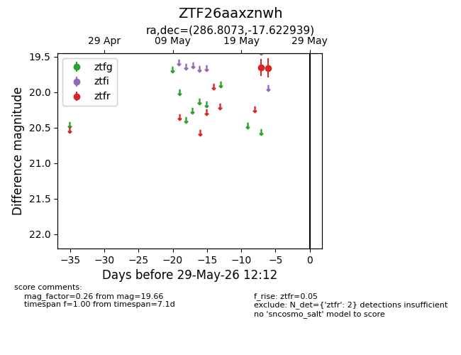
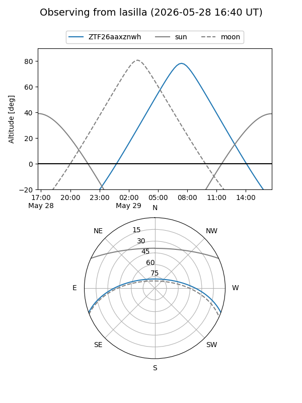
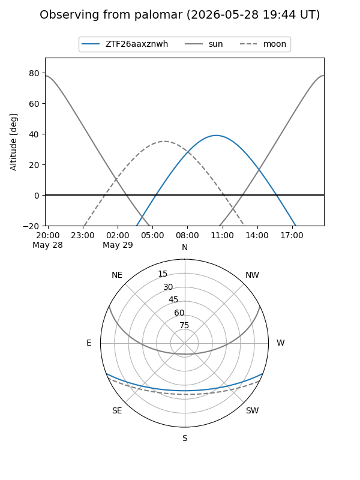

ZTF26aaxznwh
Target ZTF26aaxznwh at 2026-05-29 12:16
Aliases and brokers:
lsst-FINK: link
lsst-Lasair: link
lsst-ALeRCE: link
ztf-FINK: link
ztf-Lasair: link
ztf-ALeRCE: link
alt names
ZTF26aaxznwh (ztf,fink_ztf)
Coordinates:
equatorial (ra, dec) = 286.8073,-17.62294
equatorial (HMS+DMS) = 19:07:13.75,-17:37:22.58
galactic (l, b) = (18.7923,-11.32933)
Flags:
Photometry:
last ztfr=19.66
2 ztfr detections
Lightcurve

Visibility


Additional plots